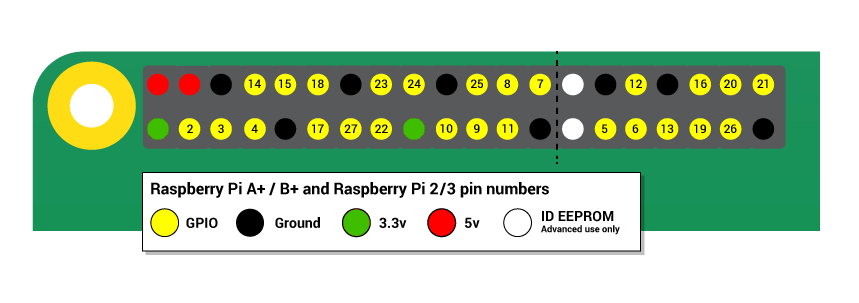

Licenca
To delo je na voljo pod pogoji slovenske licence Creative Commons 2.5:
priznanje avtorstva - nekomercialno - deljenje pod enakimi pogoji.
Celotna licenca je na voljo na spletu na naslovu http://creativecommons.org/licenses/by-nc-sa/2.5/si/. V skladu s to licenco je dovoljeno vsakemu uporabniku delo razmnoževati, distribuirati, javno priobčevati, dajati v najem in tudi predelovati, vendar samo v nekomercialne namene in ob pogoju, da navede avtorja oziroma avtorje in izdajatelja tega dela. Če uporabnik delo predela, kar pomeni, da ga spremeni, preoblikuje, prevede ali uporabi to delo v svojem delu, lahko predelavo dela ponudi na voljo le pod pogoji, ki so enaki pogojem iz te licence oziroma pod enako licenco.

GPIO nožice
Ena od Malininih močnih lastnosti so tudi GPIO nožice (angl. pins) ob zgornjem robu ploščice. GPIO pomeni General-Purpose Input/Output. Te nožice so fizični vmesnik med Malino in zunanjim svetom. Na najpreprostejši ravni si jih lahko predstavljaš kot stikala, ki jih lahko vklopiš ali izklopiš (vhod) ali pa da jih lahko vklopi ali izklopi Malina (izhod).
GPIO nožice omogočajo, da je Malina priključena na elektronska vezja ter tako nadzoruje oziroma nadzira zunanji svet. Malina lahko nadzoruje LED diode, jih vklaplja ali izklaplja, zaganja motorje in mnoge druge stvari. Prav tako lahko ugotovi, ali je bilo pritisnjeno stikalo, temperaturo in svetlobo. To imenujemo fizično računalništvo.
Malina ima 40 GPIO nožic (26 nožic na starejših modelih), ki zagotavljajo različne funkcije.
Če imaš RasPiO označevalnik nožic, ti le-ta lahko pomaga ugotoviti za kaj se uporablja posamezna nožica. Vedno se prepričaj, da je označevalnik nožic pravilno obrnjen. To pomeni, da je odprtina za obesek ključev v smeri proti vratom USB in obrnjena navzven.

Če nimaš RasPiO označevalnika nožic, ti lahko številke nožic pomaga prepoznati spodnja slika:

Opaziš lahko, da so nekatere nožice označene kot 3V3, 5V, GND in GP2, GP3 itd.:
| Oznaka | Pomen | Opis |
|---|---|---|
| 3V3 | 3,3 volti | Vse, kar je povezano na to nožico, bo vedno dobilo napetost 3,3 V. |
| 5V0 | 5 voltov | Vse, kar je povezano na to nožico, bo vedno dobilo napetost 5 V. |
| GND | ozemljitev | Nič voltov, uporablja se za zaključevanje električnega vezja. |
| #17 | GPIO nožica 17 | Te nožice so za splošno uporabo in jih lahko nastaviš kot vhodne ali izhodne nožice. |
| ID_SC/ID_SD/DNC | Posebne nožice |
OPOZORILO: Če upoštevaš navodila, je igranje z GPIO nožicami varno in zabavno. Naključno priklapljanje žic in virov napajanja v Malino pa jo lahko uniči, še posebej, če uporabljaš 5 V nožice. Slabe stvari se lahko zgodijo tudi, če poskušaš z Malino neposredno povezati stvari, ki uporabljajo veliko napajanja; LED diode so v redu, motorji pa ne.